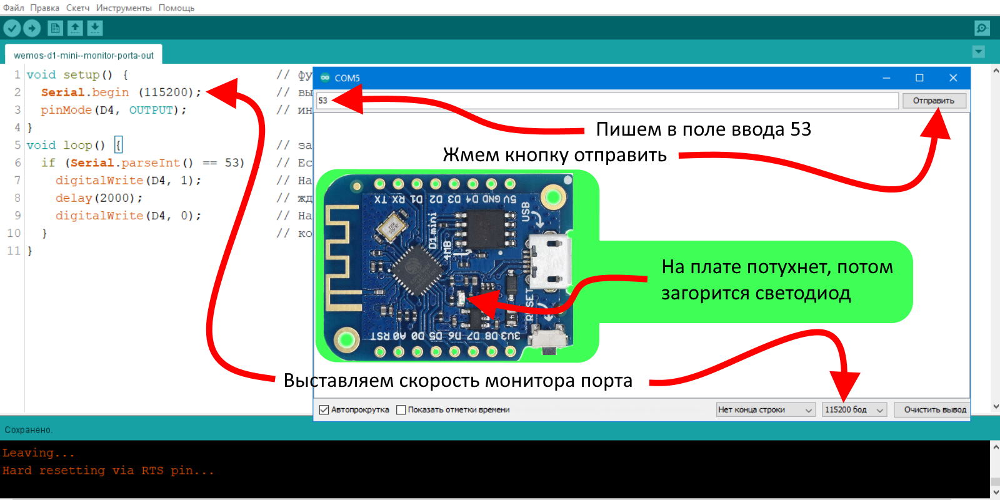

Здесь расположены небольшие скетчи (прошивки) для esp8266 для быстрой проверки различных плат и пр.
Здесь расположены небольшие скетчи (прошивки) для esp8266 для быстрой проверки различных плат и пр.
Монитор порта у нас может работать не только на прием из микроконтроллера как в этом примере , но и на отправку сообщений в микроконтроллер. Данная функция очень удобна для различных тестов наших будующих прошивок особенно тогда когда не все элементы управления готовы, например у нас еще нет кнопок но охота поуправлять устройством тогда мы просто подключаем монитор порта на прием и управляем, так же допустим нет термодатчика который передает температуру в цифре и спомощью монитора порта мы можем передать различную температуру и посмотреть как работает наше устройство. В прошивке мы ждем постоянно информацию из монитора порта и как только она приходит такая как мы хотим срабатывает светодиод на плате, на ЕСП светодиод инвертируемый и это означает как только мы подадим на него питание то он потухнет, а как питание пропадет светодиод загорится. Число можно передавать любое, например 53 как у нас в прошивке, и таким образом мы можем управлять хоть сотней действий на плате, единственное кроме нуля так как ноль и так все время передается
void setup() { // функция настроек и разового ввода данных
Serial.begin (115200); // выставляем скорость на порту
pinMode(D4, OUTPUT); // инициализация контакта Wemos D1 Mini светодиод на GPIO2 (D4)
}
void loop() { // запускаем бесконечную обработку кода (цикл)
if (Serial.parseInt() == 53) { // Если (Число из монитора порта = 53) то выполняем команды до конца скобки
digitalWrite(D4, 1); // На пине D4 к которому подключен светодиод устанавливаем 1 это +3.3 вольтa
delay(2000); // ждем 2000 милисекунд - 2 секунды
digitalWrite(D4, 0); // На пине D4 к которому подключен светодиод устанавливаем 0 это 0 вольт
} // команды из if выполняются до этой скобки
}

Для плавного включения и работы в различных режимах используют ШИМ, многих он бесит в экранах смартфонов, но это самый простой способ регулирования мощности. ШИМ можно применить для регулировки скорости и плавного набора скорости различых моторов, например квадрокоптеров, можно изменять свечение ламп и светодиодов, регулировать нагрев, например паяльника, утюга или электроплитки, а так же с помощью ШИМ можно предавать информацию о работе, например с помощью ШИМ передают информацию о давлении некоторые датчики фреона в автомобиле. ШИМ в есп реализован довольно просто, можно использовать почти все пины для этого и регулировать частоту в приличных пределах. В нашем скетче мы будем управлять встроенным светодиодом, для начала выставим частоту в 100 герц и настроим выход на пин д4, затем в цикле включим ШИМ на пине д4 и выставим скважность. Скважность это то чем управляет шим сигнал, чем больше скважность тем больше мощности передается на устройство, смотрите рисунок ниже, но в есп светодиод у нас инверсный он будет показывать все наоборот.
void setup() // функция настроек и разового ввода данных
{
analogWriteFreq(100); // выставляем частоту (100.. 40000 Гц)
pinMode(D4, OUTPUT); // д4 пин настраиваем на выход
}
void loop() // запускаем бесконечную обработку кода (цикл)
{
analogWrite(D4, 175); //включаем работу шим на пин д4, 0-255 скважность
}